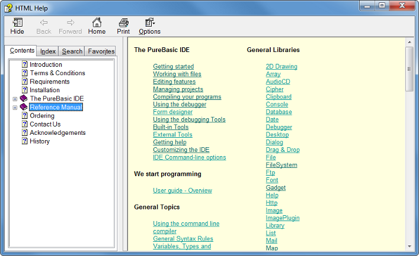

Getting Help
The PureBasic IDE provides ways to access the PureBasic help-file, as well as other files and documentation you want to view while programming.Quick access to the reference guide

By pressing the help shortcut (F1 by default) or selecting the "Help..." command from the Help menu while the mouse cursor is over a PureBasic keyword or function, the help will be opened directly at the description of that keyword or function.
If the word at the cursor position has no help entry, the main reference page will be displayed.
The reference manual can also be viewed side by side with the source code using the Help Tool.
Quick access to Windows API help
There are two ways to get the same quick access as for the PureBasic functions (by pressing F1 with the cursor on the function) also for functions of the Windows API. To enable this feature you have to download additional help files for these functions:
Microsoft Platform SDK The Microsoft Platform SDK provides the most complete and up to date programming reference available for the windows platform. It provides information on all API functions, as well as overviews and introductions to the different technologies used when programming for the windows platform. It is however quite big (up to 400MB depending on the selected components).
For the IDE help, you can either install the "February 2003" or the "Windows Server 2003 SP1" edition of the SDK.
It can be downloaded from here:
http://www.microsoft.com/msdownload/platformsdk/sdkupdate/
Note that the SDK can also be ordered on CD from this page. Also if you are the owner of any development products from Microsoft (such as Visual Studio), there might be a copy of the SDK included on one of the CDs that came with it.
The win32.hlp help-file There is a much smaller alternative to the complete SDK by Microsoft (7.5 MB download). This help is quite old (written for Windows95 in fact), so it does not provide any information on new APIs and technologies introduced since then.
However, it provides good information about commonly used API that is still valid today, as these mostly did not change. This download is recommended if you only need occasional help for API functions, but do not want to download the full SDK.
It can be downloaded from here:
http://www.purebasic.com/download/WindowsHelp.zip
To use it from the PureBasic IDE, just create a "Help" subdirectory in your PureBasic folder and copy the "win32.hlp" file into it.
Accessing external helpfiles from the IDE
If you have other helpfiles you wish to be able to access from the IDE, then create a "Help" subdirectory in your PureBasic folder and copy them to it. These files will appear in the "External Help" submenu of the Help menu, and in the popupmenu you get when right-clicking in the editing area. Chm and Hlp files will be displayed in the MS help viewer. The IDE will open the helpfiles in the internal fileviewer. So files like text files can be viewed directly like this. For other types, you can use the Config Tools menu to configure an external tool to handle the type of help-file you use. The help will then be displayed in that tool.
For example, if you have pdf helpfiles, configure an external tool to handle pdf files and put the files in the Help subdirectory of PureBasic. Now if you click the file in the "external help" menu, it will be opened in that external tool.